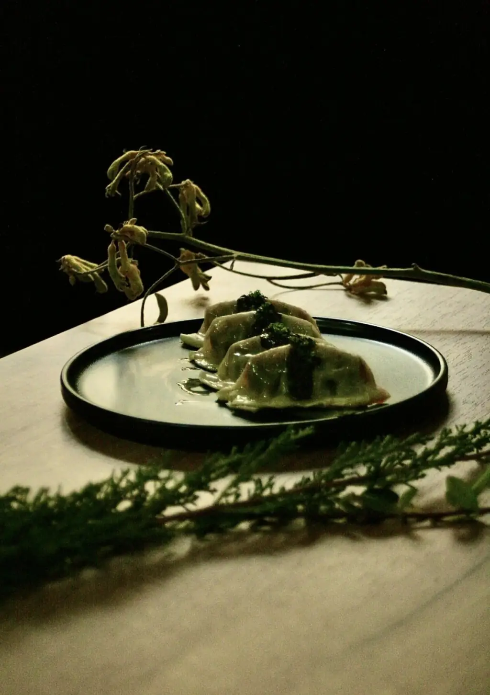
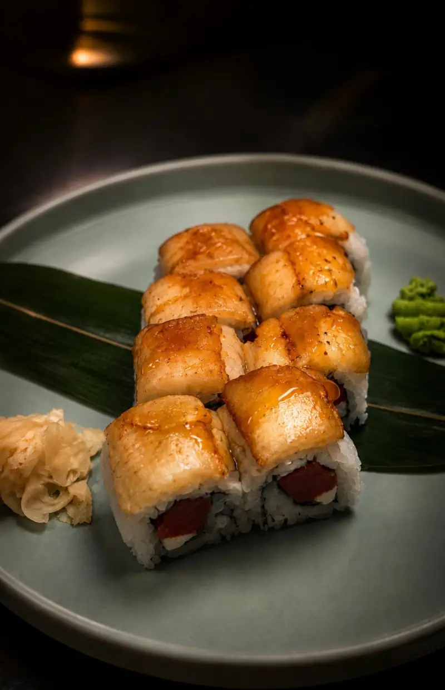
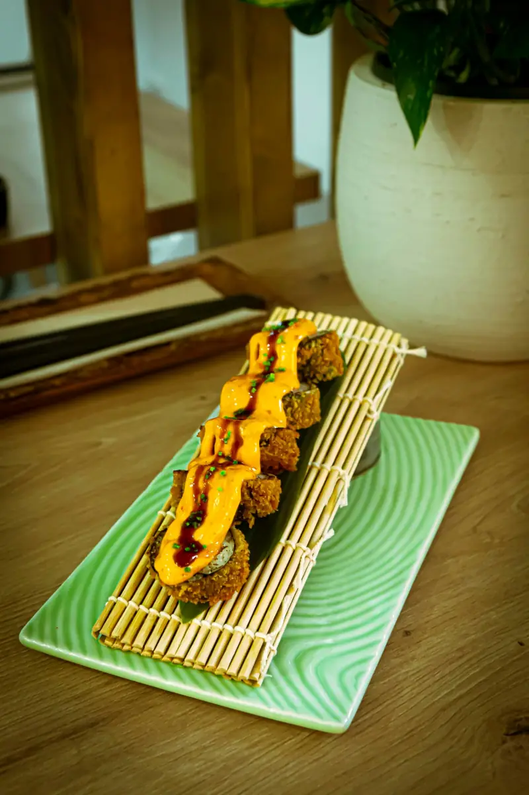
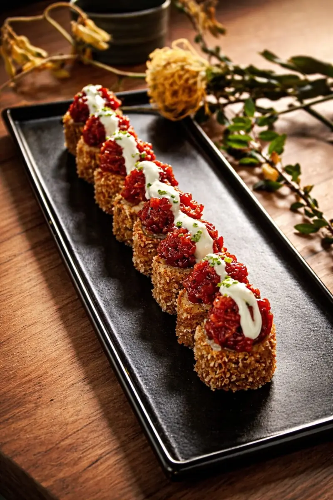
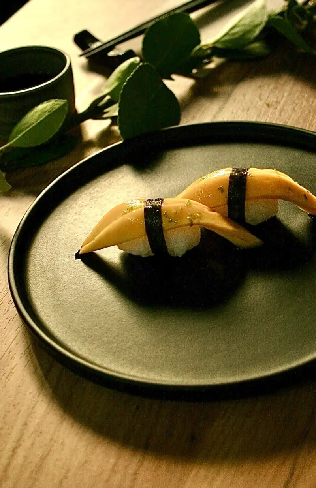
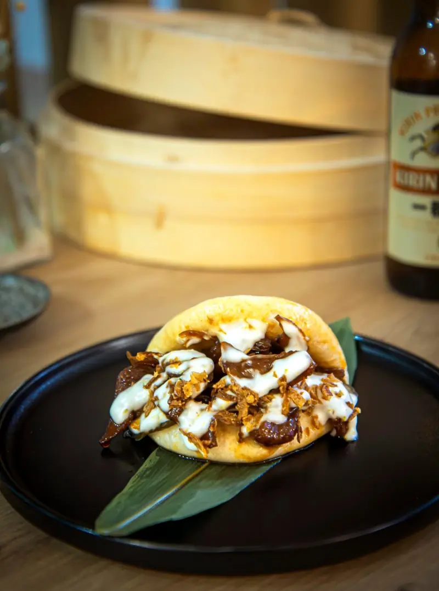
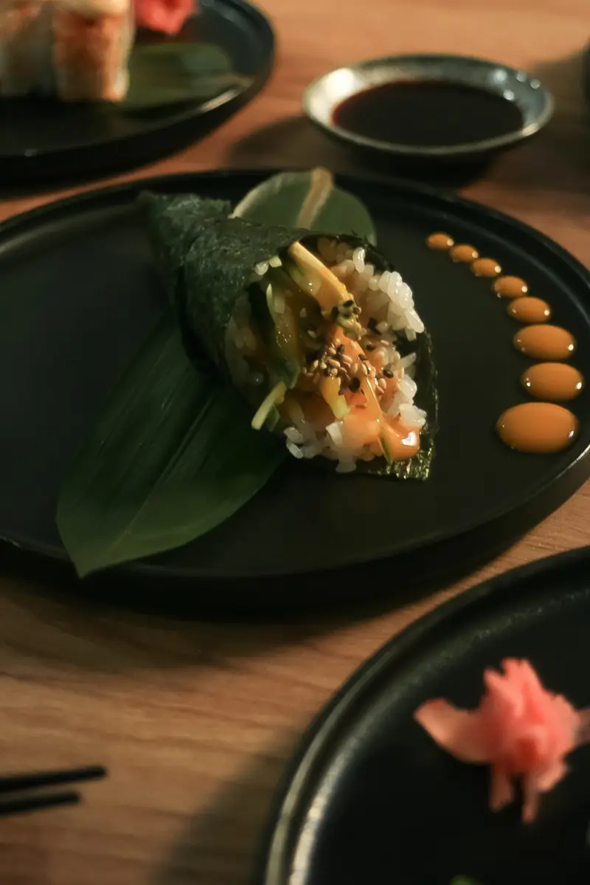
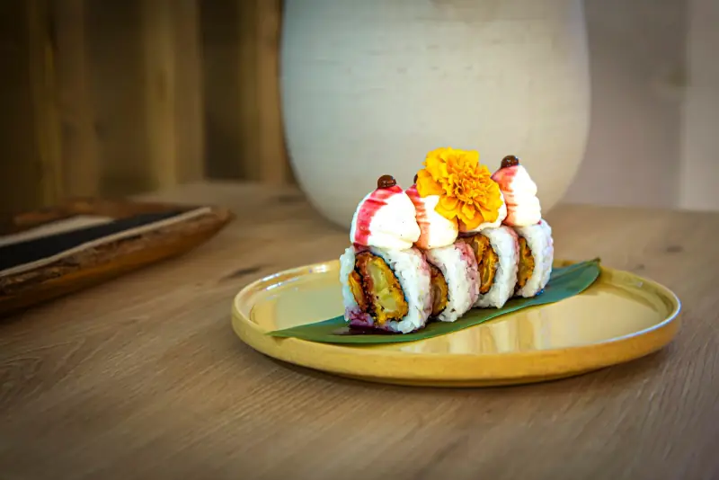
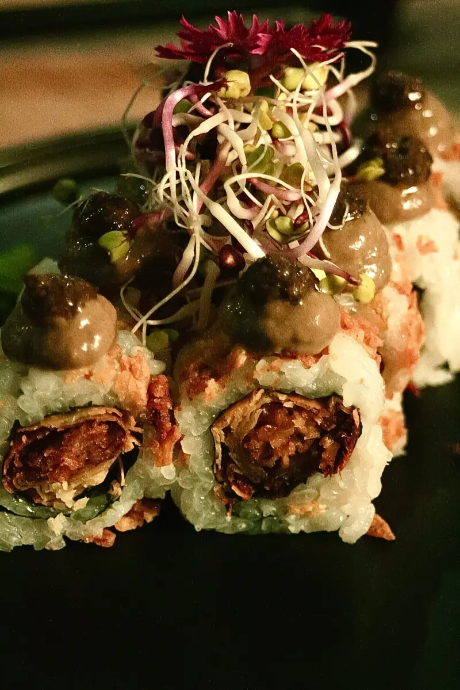

Sushi vegano,
técnica japonesa y
sabor sin excusas


The Vegan Roll no es un japonés al uso. Es el primer restaurante 100% plant-based de sushi en España: técnica clásica, producto vegetal y una carta que reinventa el atún, el salmón y el queso sin que nadie eche nada de menos. Nigiris, uramakis, temakis, gyozas hechas a mano y postres que se disfrazan de sushi. Aquí no hay renuncia: hay creatividad, respeto por los animales y sabor de verdad.
reserva tu mesaMakis
Desde el California Vegan Roll hasta el Kumo, con crema caliente de parmesano flambeada. Salmón macerado en soja y sésamo, atún picante con mango, tempura de queso, cebolla crujiente y esferificaciones que estallan. Rollos pensados pieza a pieza, con la textura exacta y el punto de arroz de siempre.
descubre nuestra carta







Fuego
El Kazan sale con espectáculo de fuego; el Kumo, flambeado en sala. Gyozas de setas silvestres con paté de trufa, baos glaseados en teriyaki, wok de yakisoba con menta y albahaca. Y para cerrar, mochis, cheesecake y el Yume No-kuro. Todo, sin un solo ingrediente de origen animal.
ver platos calientes
Dicen que el sushi necesita pescado. The Vegan Roll lleva desde 2022 demostrando lo contrario en el centro de Madrid.
Javier, maestro sushiman con más de una década detrás de la barra, decidió juntar sus dos amores: el arte de hacer sushi y una forma de comer que no le cueste la vida a nadie. Aquí el atún se construye, el salmón se macera, el queso se funde y el fuego se usa con criterio.
Cada pieza se monta a mano, una a una, con arroz templado y nori crujiente. No imitamos por imitar: buscamos la textura, el umami y el punto justo de acidez que hacen que un bocado se recuerde.
Somos un sitio pequeño, de barrio, con música, con gente que repite y con perros bienvenidos. Ven con hambre, deja la salsa de soja para el final y descubre que la cocina vegetal no es una renuncia, es una declaración.
The Vegan Roll®
魚のない寿司、言い訳のない味
Estamos en Caños del Peral, 9. Ópera, Madrid.
A dos minutos del Teatro Real, en pleno centro. Un local pequeño donde cabe todo: barra, sala, pet friendly, wifi y opciones sin gluten. Ven a comer, a cenar o pídelo a casa con Glovo.
- Dirección
- Caños del Peral, 9 — 28013 Madrid
- Comidas
- Jueves a domingo · 13:00 – 16:00
- Cenas
- Toda la semana · 19:30 – 23:00
- Teléfono
- 685 607 037 · 825 853 761
- Delivery
- Glovo · recogida en local